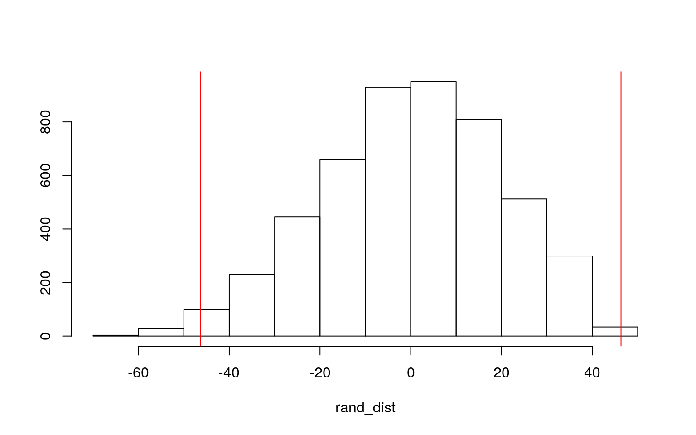
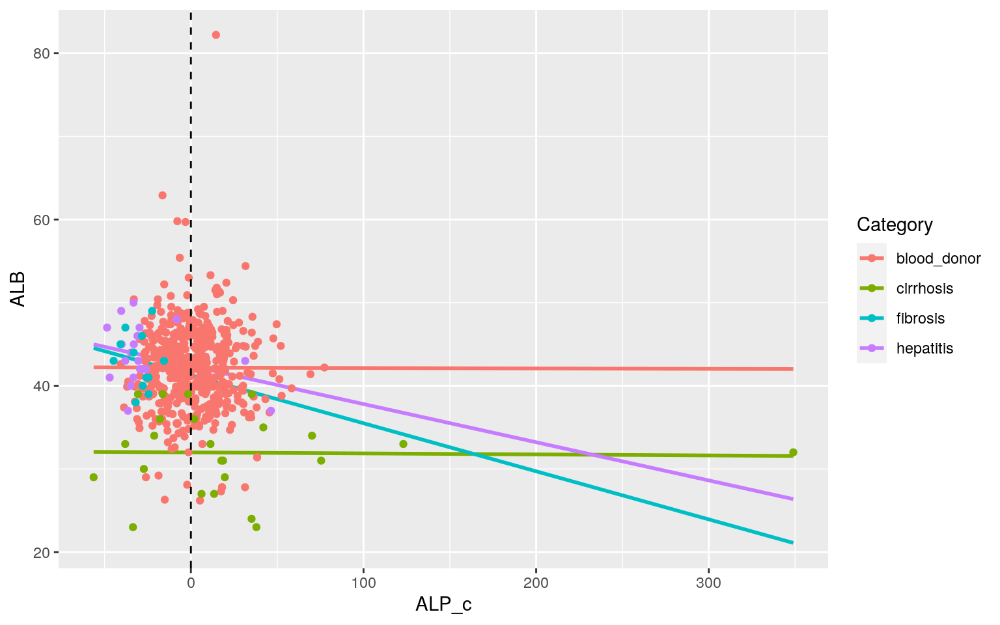
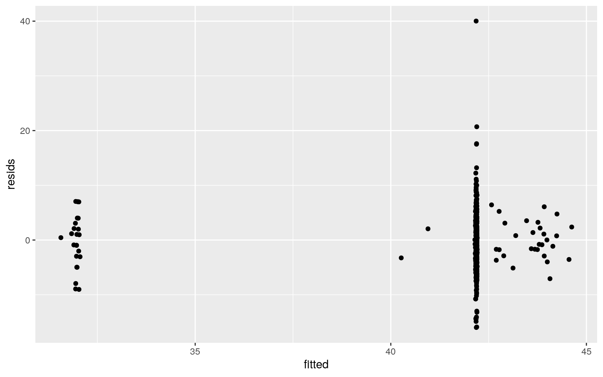
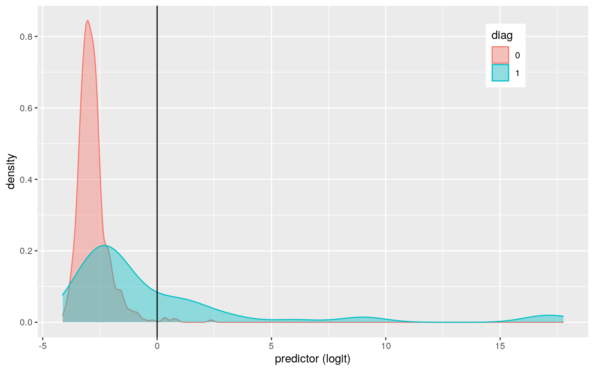

#LEAVE THIS CHUNK ALONE!
library(knitr)
opts_chunk$set(fig.align="center", fig.height=5, message=FALSE, warning=FALSE, fig.width=8, tidy.opts=list(width.cutoff=60),tidy=TRUE)
class_diag<-function(probs,truth){
tab<-table(factor(probs>.5,levels=c("FALSE","TRUE")),truth)
acc=sum(diag(tab))/sum(tab)
sens=tab[2,2]/colSums(tab)[2]
spec=tab[1,1]/colSums(tab)[1]
ppv=tab[2,2]/rowSums(tab)[2]
if(is.numeric(truth)==FALSE & is.logical(truth)==FALSE) truth<-as.numeric(truth)-1
#CALCULATE EXACT AUC
ord<-order(probs, decreasing=TRUE)
probs <- probs[ord]; truth <- truth[ord]
TPR=cumsum(truth)/max(1,sum(truth))
FPR=cumsum(!truth)/max(1,sum(!truth))
dup<-c(probs[-1]>=probs[-length(probs)], FALSE)
TPR<-c(0,TPR[!dup],1); FPR<-c(0,FPR[!dup],1)
n <- length(TPR)
auc<- sum( ((TPR[-1]+TPR[-n])/2) * (FPR[-1]-FPR[-n]) )
data.frame(acc,sens,spec,ppv,auc)
}hep <- read_csv("hep.csv")
# Remove all rows with NAs
hep <- na.omit(hep)
hep$Category[which(hep$Category == "0=Blood Donor")] = "blood_donor"
hep$Category[which(hep$Category == "3=Cirrhosis")] = "cirrhosis"
hep$Category[which(hep$Category == "1=Hepatitis")] = "hepatitis"
hep$Category[which(hep$Category == "2=Fibrosis")] = "fibrosis"
hep <- hep %>% filter(Category != "0s=suspect Blood Donor")
hep %>% group_by(Category) %>% count()## # A tibble: 4 x 2
## # Groups: Category [4]
## Category n
## <chr> <int>
## 1 blood_donor 526
## 2 cirrhosis 24
## 3 fibrosis 12
## 4 hepatitis 20The hep dataset contains clinical and demographic characteristics of blood donors and hepatitis C patients. Numeric variables include age, albumin blood, alkaline phosphatase, alanine transaminase, aspartate transaminase, bilirubin, acetylcholinesterase, cholesterol, creatinine, gamma-glutamyl transferase, and protein levels. Categorical variables include the disease category, if any, to which each person falls into (blood donor, hepatitis C, cirrhosis, and firbosis) and sex composing of male and female. After removing all NAs, there are 526 blood donors, 24 cirrhosis patients, 12 fibrosis patients, and 20 hepatitis patients, for a total number 582 participants.
manova_hep <- manova(cbind(ALB, ALP, AST, BIL, CHOL) ~ Category,
data = hep)
summary(manova_hep)## Df Pillai approx F num Df den Df Pr(>F)
## Category 3 0.80518 42.262 15 1728 < 2.2e-16 ***
## Residuals 578
## ---
## Signif. codes: 0 '***' 0.001 '**' 0.01 '*' 0.05 '.' 0.1
' ' 1summary.aov(manova_hep)## Response ALB :
## Df Sum Sq Mean Sq F value Pr(>F)
## Category 3 2485.3 828.43 33.569 < 2.2e-16 ***
## Residuals 578 14264.4 24.68
## ---
## Signif. codes: 0 '***' 0.001 '**' 0.01 '*' 0.05 '.' 0.1
' ' 1
##
## Response ALP :
## Df Sum Sq Mean Sq F value Pr(>F)
## Category 3 40270 13423.3 23.713 1.742e-14 ***
## Residuals 578 327195 566.1
## ---
## Signif. codes: 0 '***' 0.001 '**' 0.01 '*' 0.05 '.' 0.1
' ' 1
##
## Response AST :
## Df Sum Sq Mean Sq F value Pr(>F)
## Category 3 266414 88805 150.13 < 2.2e-16 ***
## Residuals 578 341888 592
## ---
## Signif. codes: 0 '***' 0.001 '**' 0.01 '*' 0.05 '.' 0.1
' ' 1
##
## Response BIL :
## Df Sum Sq Mean Sq F value Pr(>F)
## Category 3 62599 20866.4 104.68 < 2.2e-16 ***
## Residuals 578 115216 199.3
## ---
## Signif. codes: 0 '***' 0.001 '**' 0.01 '*' 0.05 '.' 0.1
' ' 1
##
## Response CHOL :
## Df Sum Sq Mean Sq F value Pr(>F)
## Category 3 63.15 21.0514 18.462 1.891e-11 ***
## Residuals 578 659.06 1.1402
## ---
## Signif. codes: 0 '***' 0.001 '**' 0.01 '*' 0.05 '.' 0.1
' ' 1# Perform post-hoc test for 5 ANOVAs
pairwise.t.test(hep$ALB, hep$Category, p.adj = "none")##
## Pairwise comparisons using t tests with pooled SD
##
## data: hep$ALB and hep$Category
##
## blood_donor cirrhosis fibrosis
## cirrhosis < 2e-16 - -
## fibrosis 0.58 6.4e-10 -
## hepatitis 0.21 4.5e-14 0.74
##
## P value adjustment method: nonepairwise.t.test(hep$ALP, hep$Category, p.adj = "none")##
## Pairwise comparisons using t tests with pooled SD
##
## data: hep$ALP and hep$Category
##
## blood_donor cirrhosis fibrosis
## cirrhosis 6.1e-07 - -
## fibrosis 1.5e-05 1.0e-10 -
## hepatitis 1.0e-06 2.0e-12 0.68
##
## P value adjustment method: nonepairwise.t.test(hep$AST, hep$Category, p.adj = "none")##
## Pairwise comparisons using t tests with pooled SD
##
## data: hep$AST and hep$Category
##
## blood_donor cirrhosis fibrosis
## cirrhosis < 2e-16 - -
## fibrosis < 2e-16 0.0023 -
## hepatitis < 2e-16 8.8e-06 0.4503
##
## P value adjustment method: nonepairwise.t.test(hep$BIL, hep$Category, p.adj = "none")##
## Pairwise comparisons using t tests with pooled SD
##
## data: hep$BIL and hep$Category
##
## blood_donor cirrhosis fibrosis
## cirrhosis <2e-16 - -
## fibrosis 0.175 <2e-16 -
## hepatitis 0.016 <2e-16 0.672
##
## P value adjustment method: nonepairwise.t.test(hep$CHOL, hep$Category, p.adj = "none")##
## Pairwise comparisons using t tests with pooled SD
##
## data: hep$CHOL and hep$Category
##
## blood_donor cirrhosis fibrosis
## cirrhosis 4.5e-12 - -
## fibrosis 0.02475 0.02094 -
## hepatitis 0.14467 0.00018 0.37455
##
## P value adjustment method: none# Type I error probability
1 - (0.95^36)## [1] 0.8422208# bonferroni
0.05/36## [1] 0.001388889After performing a MANOVA test, at least one of the 5 response variables differ by Category (p<0.05). To test for which response variable differs by Category, a post-hoc test was conducted where we saw that all albumin blood, alkaline phosphatase, aspartate transaminase, bilirubin, and cholesterol differ by Category (blood donor, hepatitis C, cirrhosis, and firbosis patient). However this was done prior to adjusting the significance level. In total, 36 hypothesis tests were conducted. The probability of making a type I error is 0.8422208. A 0.001388889 significance level should be used to keep the overall type I error rate at .05 (bonferroni adjusted). It is probable that most, if not all, MANOVA assumptions are violated.
Using the adjusted significance level, there is a significant mean difference in albumin blood levels between cirrhosis patients and normal blood donor, fibrosis and cirrhosis patients,and hepatitis C and cirrhosis patients. There is also a significant mean difference in alkaline phosphatase levels for all category group comparison except for hepatitis C and fibrosis patients. A mean difference in aspartate transaminase levels for all category group comparison except for hepatitis C and fibrosis patients and fibrosis and cirrhosis patients. For bilirubin levels, there is a significant mean difference for cirrhosis patients and blood donors, cirrhosis and fibrosis patients, and hepatitis C and cirrhosis patients. Finally, there is a significant mean difference in cholesterol levels for only cirrhosis patients and blood donors, and cirrhosis and hepatitis C patients.
# H0: mean bilirubin levels are the same for fibrosis and
# cirrhosis patients
fib <- hep %>% select(Category, BIL) %>% filter(Category == "fibrosis")
cir <- hep %>% select(Category, BIL) %>% filter(Category == "cirrhosis")
fib_cir <- full_join(fib, cir)
t.test(fib$BIL, cir$BIL)##
## Welch Two Sample t-test
##
## data: fib$BIL and cir$BIL
## t = -3.567, df = 24.012, p-value = 0.00156
## alternative hypothesis: true difference in means is not
equal to 0
## 95 percent confidence interval:
## -73.14187 -19.52480
## sample estimates:
## mean of x mean of y
## 14.16667 60.50000# mean BIL difference between fibrosis and cirrhosis patients
60.5 - 14.16667## [1] 46.33333rand_dist <- vector()
for (i in 1:5000) {
new <- data.frame(BIL = sample(fib_cir$BIL), Category = fib_cir$Category)
rand_dist[i] <- mean(new[new$Category == "cirrhosis", ]$BIL) -
mean(new[new$Category == "fibrosis", ]$BIL)
}
# two-tailed p-value BIL
mean(rand_dist > 46.33333 | rand_dist < -46.33333)## [1] 0.0112{
hist(rand_dist, main = "", ylab = "")
abline(v = c(-46.33333, 46.33333), col = "red")
}
Using a Welch Two Sample t-test, mean bilirubin levels for fibrosis and cirrhosis patients are 14.167 and 60.50, respectively. The mean difference between the two number was 46.33. A randomization test was then conducted to test whether mean bilirubin levels are the same for fibrosis and cirrhosis patients (null hypothesis) because both groups have small sample sizes. A p-value of 0.0138 was obtained from the randomization test, therefore we can reject the null hypothesis. There is a significant mean difference in bulirubin levels for fibrosis and cirrhosis patients.
# Mean center numeric variable alkaline phosphate (ALP)
hep_c <- hep %>% mutate(ALP_c = ALP - mean(ALP, na.rm = T))
# linear model predicting Albumin blood levels from alkaline
# phosphate (ALP) and Category
linmod_hep_c <- lm(ALB ~ ALP_c * Category, data = hep_c)
summary(linmod_hep_c)##
## Call:
## lm(formula = ALB ~ ALP_c * Category, data = hep_c)
##
## Residuals:
## Min 1Q Median 3Q Max
## -15.986 -2.980 -0.092 3.102 40.019
##
## Coefficients:
## Estimate Std. Error t value Pr(>|t|)
## (Intercept) 4.219e+01 2.173e-01 194.190 <2e-16 ***
## ALP_c -5.053e-04 1.214e-02 -0.042 0.967
## Categorycirrhosis -1.020e+01 1.091e+00 -9.346 <2e-16 ***
## Categoryfibrosis -9.116e-01 5.581e+00 -0.163 0.870
## Categoryhepatitis 2.065e-01 1.692e+00 0.122 0.903
## ALP_c:Categorycirrhosis -7.037e-04 1.777e-02 -0.040
0.968
## ALP_c:Categoryfibrosis -5.730e-02 1.811e-01 -0.316 0.752
## ALP_c:Categoryhepatitis -4.541e-02 4.933e-02 -0.921
0.358
## ---
## Signif. codes: 0 '***' 0.001 '**' 0.01 '*' 0.05 '.' 0.1
' ' 1
##
## Residual standard error: 4.981 on 574 degrees of freedom
## Multiple R-squared: 0.1499, Adjusted R-squared: 0.1395
## F-statistic: 14.46 on 7 and 574 DF, p-value: < 2.2e-16Our R-squared is 0.1499, which is the proportion of variation that our model can explain. Albumin blood levels for a normal blood donor is 42.188 g/L with an average alkaline phosphate level. For every 1-unit increase in alkaline phosphate level for a normal blood donor, albumin level decreases 0.0005053 g/L. Those with a Cirrhosis diagnosis with an average alkaline phosphate level have an albumin level 10.20 g/L lower than normal blood donors.Those with a Fibrosis diagnosis with an average alkaline phosphate level have an albumin level 0.912 g/L lower than normal blood donors. Next,those with a Hepatitis C diagnosis and with an average alkaline phosphate level have an albumin level 0.207 g/L higher than normal blood donors. Finally, the slope of alkaline phosphate on albumin level for those with Cirrhosis, Fibrosis, and Hepatitis C is 0.0007037,0.0573043, and 0.0454149 less than for normal blood donors, respectively.
# LINEAR REGRESSION GRAPH
ggplot(hep_c, aes(ALP_c, ALB, color = Category)) + geom_smooth(method = "lm",
se = F, fullrange = T) + geom_point() + geom_vline(xintercept = 0,
lty = 2)
# Homoskedasticity
library(lmtest)
library(sandwich)
bptest(linmod_hep_c)##
## studentized Breusch-Pagan test
##
## data: linmod_hep_c
## BP = 2.2743, df = 7, p-value = 0.9431resids <- linmod_hep_c$residuals
# Normality
ks.test(resids, "pnorm", mean = 0, sd(resids))##
## One-sample Kolmogorov-Smirnov test
##
## data: resids
## D = 0.050403, p-value = 0.1039
## alternative hypothesis: two-sidedfitted <- lm(ALB ~ ALP_c * Category, data = hep_c)$fitted.values
ggplot() + geom_point(aes(fitted, resids))
After conducting the Breusch-Pagan test for homoskedasticity on the linear model, we can conclude that the model meets the homoskedasticity assumption (p=0.943). After also conducting the Kolmogorov-Smirnov test to check for normality, we can say our model meets the normality assumption (p=0.10). However, by plotting the residuals against the fitted values, it does not appear that there is a linear relationship.
# recompute regression with robust SEs
coeftest(linmod_hep_c, vcov = vcovHC(linmod_hep_c))##
## t test of coefficients:
##
## Estimate Std. Error t value Pr(>|t|)
## (Intercept) 4.2188e+01 2.1967e-01 192.0549 <2e-16 ***
## ALP_c -5.0528e-04 1.1771e-02 -0.0429 0.9658
## Categorycirrhosis -1.0199e+01 1.1497e+00 -8.8712 <2e-16
***
## Categoryfibrosis -9.1160e-01 3.6199e+00 -0.2518 0.8013
## Categoryhepatitis 2.0646e-01 1.8388e+00 0.1123 0.9106
## ALP_c:Categorycirrhosis -7.0372e-04 1.3872e-02 -0.0507
0.9596
## ALP_c:Categoryfibrosis -5.7304e-02 1.0553e-01 -0.5430
0.5873
## ALP_c:Categoryhepatitis -4.5415e-02 5.4304e-02 -0.8363
0.4033
## ---
## Signif. codes: 0 '***' 0.001 '**' 0.01 '*' 0.05 '.' 0.1
' ' 1After computing the regression model with robust standard errors, there was no difference in the coefficient estimates compared to the previously run regression model. There was only one significant coefficient in the regression model. Those with a Cirrhosis diagnosis with an average alkaline phosphate level have an albumin level 10.20 g/L lower than normal blood donors (p<0.05).
# Resampling Residuals
fit <- lm(ALB ~ ALP_c * Category, data = hep_c)
resids <- fit$residuals
fitted <- fit$fitted.values
resid_resample <- replicate(5000, {
new_resids <- sample(resids, replace = TRUE)
hep_c$new_ALB <- fitted + new_resids
fit <- lm(new_ALB ~ ALP_c * Category, data = hep_c)
coef(fit)
})
resid_resample %>% t %>% as.data.frame %>% summarize_all(sd)## (Intercept) ALP_c Categorycirrhosis Categoryfibrosis
Categoryhepatitis
## 1 0.2149457 0.01212266 1.09127 5.482582 1.701786
## ALP_c:Categorycirrhosis ALP_c:Categoryfibrosis
ALP_c:Categoryhepatitis
## 1 0.01755235 0.1766856 0.04980107There were some slight changes in bootstrapped SEs from the original and robust SEs. The bootstrapped SEs for cirrhosis and fibrosis were lower than their original SEs. Likewise, the bootstrapped SEs for cirrhosis and hepatitis C were lower than the robust SEs. Fibrosis bootstrapped SE was much greater than the robust SE. Finally, the bootstrap SE for the interaction between alkaline phosphatase level and fibrosis status is greater than the robust SE for the interaction.
hep <- hep %>% mutate(sex_bin = ifelse(Sex == "m", 1, 0))
hep <- hep %>% mutate(diag = ifelse(Category == "blood_donor",
0, 1))
fit_hep <- glm(diag ~ sex_bin + BIL + CHE, data = hep, family = "binomial")
summary(fit_hep)##
## Call:
## glm(formula = diag ~ sex_bin + BIL + CHE, family =
"binomial",
## data = hep)
##
## Deviance Residuals:
## Min 1Q Median 3Q Max
## -2.2142 -0.3710 -0.3146 -0.2663 2.8806
##
## Coefficients:
## Estimate Std. Error z value Pr(>|z|)
## (Intercept) -2.45762 0.70129 -3.504 0.000458 ***
## sex_bin 0.22863 0.37151 0.615 0.538277
## BIL 0.09751 0.01663 5.864 4.52e-09 ***
## CHE -0.15762 0.07878 -2.001 0.045405 *
## ---
## Signif. codes: 0 '***' 0.001 '**' 0.01 '*' 0.05 '.' 0.1
' ' 1
##
## (Dispersion parameter for binomial family taken to be 1)
##
## Null deviance: 368.64 on 581 degrees of freedom
## Residual deviance: 276.10 on 578 degrees of freedom
## AIC: 284.1
##
## Number of Fisher Scoring iterations: 6exp(coef(fit_hep)) %>% round(3)## (Intercept) sex_bin BIL CHE
## 0.086 1.257 1.102 0.854The logistic regression model is predicting whether someone is or is not diagnosed with a liver disease (hepatitis, cirrhosis, or fibrosis) from bilirubin level, acetylcholinerase level, and sex.
The odds of disease diagnosis for females with a bilirubin level of 0 is 0.086. When controlling for bilirubin level and , the odds of disease diagnosis for males is 1.257 times the odds of disease diagnosis for females, however it is not significant (p=0.54). When controlling for sex and acetylcholinerase level, for every 1-unit increase in bulirubin level, the odds of disease diagnosis for females increases by a factor of 1.102 (p<0.05). When controlling for bilirubin and sex, for every 1-unit increase in acetylcholinerase level, the odds of disease diagnosis for females increases by a factor of 0.854 (p<0.05).
probs <- predict(fit_hep, type = "response")
table(predict = as.numeric(probs > 0.5), truth = hep$diag) %>%
addmargins #0.5 is cutoff for disease diagnosis## truth
## predict 0 1 Sum
## 0 521 39 560
## 1 5 17 22
## Sum 526 56 582class_diag(probs, hep$diag)## acc sens spec ppv auc
## 1 0.9243986 0.3035714 0.9904943 0.7727273 0.8062704Our model has an AUC of 0.806, which is considered “good”. However, the model has a low sensitivity of 0.304; But the specificity is high, with a proportion of 0.99. The accuracy of our model is 0.924 and the precision is 0.773.
# density plot of the log-odds (logit) colored/grouped by
# your binary diagnosis variable
hep$logit <- predict(fit_hep, type = "link") #get predicted logit scores (logodds)
hep %>% mutate(diag = as.factor(diag)) %>% ggplot() + geom_density(aes(logit,
fill = diag, color = diag), alpha = 0.4) + theme(legend.position = c(0.85,
0.85)) + geom_vline(xintercept = 0) + xlab("predictor (logit)")
hep_all <- hep %>% select(diag, Age, sex_bin, ALB, ALP, ALT,
AST, BIL, CHE, CHOL, CREA, GGT, PROT)
fit_hep_all <- glm(diag ~ ., data = hep_all, family = "binomial")
proby <- predict(fit_hep_all, type = "response")
class_diag(proby, hep_all$diag)## acc sens spec ppv auc
## 1 0.9896907 0.9285714 0.9961977 0.962963 0.9953829After performing a logistic regression predicting diagnosis status from all other variables, our calculated AUC is 0.995, which is considered “great”. The sensitivity and specificity are 0.929 and 0.996, respectively. Accuracy was calculated to be 0.9897. Precision was 0.963.
# 10-fold CV on model
set.seed(1234)
k = 10
data <- hep_all[sample(nrow(hep_all)), ]
folds <- cut(seq(1:nrow(hep_all)), breaks = k, labels = F)
diags <- NULL
for (i in 1:k) {
train <- data[folds != i, ]
test <- data[folds == i, ]
truth <- test$diag
fit <- glm(diag ~ ., data = train, family = "binomial")
probs <- predict(fit, newdata = test, type = "response")
diags <- rbind(diags, class_diag(probs, truth))
}
summarize_all(diags, mean)## acc sens spec ppv auc
## 1 0.9742256 0.8116667 0.9922264 0.9282143 0.9619752After performing the 10-fold cross validation on the logistic regression model predicting diagnosis status from all other variables, our newly calculated AUC is 0.962, which is still considered “great”. However, the decrease in AUC from 0.99 to 0.96 indicates overfitting. The newly calculated sensitivity and specificity are 0.812 and 0.992, respectively. Accuracy was calculated to be 0.974. Precision was 0.928.
# LASSO
library(glmnet)
set.seed(1234)
y <- as.matrix(hep_all$diag)
x <- model.matrix(diag ~ ., data = hep_all)[, -1]
cv <- cv.glmnet(x, y, family = "binomial")
lasso <- glmnet(x, y, family = "binomial", lambda = cv$lambda.1se)
coef(lasso)## 13 x 1 sparse Matrix of class "dgCMatrix"
## s0
## (Intercept) -2.061082897
## Age .
## sex_bin .
## ALB .
## ALP -0.021440994
## ALT -0.101607389
## AST 0.055727362
## BIL 0.009897257
## CHE .
## CHOL -0.015435146
## CREA 0.004157636
## GGT 0.015134816
## PROT .lasso_dat <- hep_all
lasso_dat_fit <- glm(diag ~ ., data = lasso_dat, family = "binomial")
prob_lasso <- predict(lasso_dat_fit, type = "response")According to the LASSO that was run, the variables that were retained were alkaline phosphatase level (ALP), alanine transaminase level (ALT), Aspartate Transaminase level(AST), Bilirubin level (BIL), cholesterol (CHOL), creatine (CREA), and Gamma-Glutamyl Transferase(GGT)
# 10-fold CV on LASSO variables
set.seed(1234)
k = 10
data <- lasso_dat[sample(nrow(lasso_dat)), ]
folds <- cut(seq(1:nrow(lasso_dat)), breaks = k, labels = F)
diags <- NULL
for (i in 1:k) {
train <- data[folds != i, ]
test <- data[folds == i, ]
truth <- test$diag
fit <- glm(diag ~ ., data = train, family = "binomial")
probs <- predict(fit, newdata = test, type = "response")
diags <- rbind(diags, class_diag(probs, truth))
}
summarize_all(diags, mean)## acc sens spec ppv auc
## 1 0.9742256 0.8116667 0.9922264 0.9282143 0.9619752The model’s out-of-sample AUC is much greater than the AUC calculated from the above logistic regression. The AUC increased from a “good” value of 0.806 to a “great” value 0.962.
…